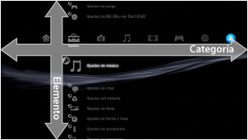
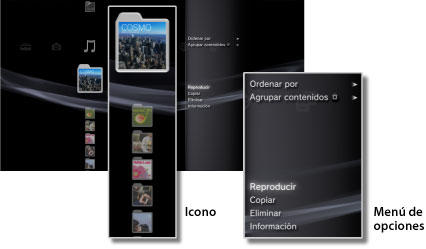
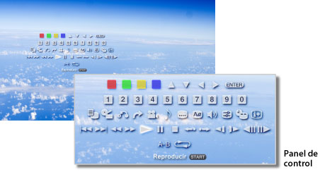

Acerca del menú XMB™ > Acerca del menú XMB™ (XrossMediaBar)
Acerca del menú XMB™ (XrossMediaBar)
Utilización del menú XMB™
El sistema PS3™ incluye una interfaz de usuario llamada XMB™ (XrossMediaBar). La fila horizontal muestra las características del sistema por categorías y la columna vertical muestra las acciones que se pueden realizar en cada una de las categorías.

| Botones direccionales | Seleccione una categoría o un elemento. |
|---|---|
Botón  |
Confirma el elemento seleccionado. |
Botón  |
Cancela la operación. |
Botón  |
Muestra el menú de opciones / panel de control. |
| Botón PS | Muestra el menú XMB™. |
Reproducción del contenido
Desde el menú XMB™, seleccione el contenido del disco o soporte de almacenamiento y, a continuación, pulse el botón . Para detener la reproducción, pulse el botón .
Nota
Para poder utilizar los soportes de almacenamiento con determinados modelos de sistema PS3™, necesitará un adaptador USB apropiado (no incluido).
Panel de información
Puede utilizar el panel de información que aparece en la parte superior derecha de la pantalla para ver información como el número de amigos conectados, avisos sobre nuevos mensajes y la información más reciente disponible en [Novedades].

(1) |
Avatar * |
|---|---|
(2) |
Número de amigos conectados * |
(3) |
Información sobre nuevo chat de texto * |
(4) |
Información sobre nuevos mensajes |
(5) |
Fecha y hora |
(6) |
Icono de ocupado |
(7) |
Información disponible en [Novedades]* |
* Solo se visualiza cuando se ha iniciado sesión en PSNSM.
Uso del menú de opciones
Seleccione un icono del menú XMB™ y, a continuación, pulse el botón para mostrar el menú de opciones. Para mostrar u ocultar el menú de opciones, pulse el botón .

Elementos del menú de opciones
Los elementos del menú de opciones variarán según la categoría.
| Reproducir / Iniciar / Visualización | Reproduce el contenido. |
|---|---|
| Extraer disco | Permite extraer el disco. |
| Eliminar | Elimina el contenido. |
| Copiar | Copie el contenido al almacenamiento del sistema o al soporte de almacenamiento.*1 |
| Información | Muestra información sobre el contenido. Es posible modificar alguno de los datos mostrados como, por ejemplo, el nombre. |
| Agregar a lista de reproducción | Agrega contenido a una lista de reproducción. |
| Mostrar todo | Muestra todas las carpetas del soporte de almacenamiento o del dispositivo de almacenamiento masivo USB.*1 |
| Ordenar por | Ordena los elementos del contenido por nombre, fecha, etc. |
| Agrupar contenidos | Cambia el método de agrupación para agrupar por álbum, formato u otras opciones.*2 |
| Supresión múltiple | Selecciona varios elementos del contenido y los elimina todos de una vez. |
| Copia múltiple | Selecciona varios elementos del contenido y los copia todos de una vez. |
| *1 |
Para poder utilizar los soportes de almacenamiento con determinados modelos de sistema PS3™, necesitará un adaptador USB apropiado (no incluido). |
|---|---|
| *2 |
El contenido que no disponga de la información necesaria para ser agrupado, se agrupará en una carpeta llamada [Desconocido]. Puede que parte del contenido no se agrupe. |
Uso del panel de control
Pulse el botón durante la reproducción del contenido para que se muestre el panel de control. Para mostrar u ocultar el panel de control, pulse el botón . Los elementos del panel de control variarán en función del contenido que se reproduzca.

Uso de varias funciones al mismo tiempo
Los usuarios pueden utilizar distintas funciones al mismo tiempo. Por ejemplo, podrán visualizar imágenes en  (Foto) o acceder a Internet en
(Foto) o acceder a Internet en  (Red) mientras reproducen música en
(Red) mientras reproducen música en  (Música).
(Música).
Ejemplo: Para visualizar imágenes en (Foto) mientras se reproduce música en (Música)
1. |
Reproduzca música en |
|---|---|
2. |
Pulse el botón PS. |
3. |
Seleccione las imágenes que desea visualizar en |
Notas
- No es posible reproducir contenido de (Música) con otras funciones durante la reproducción de discos Super Audio CD o si
 (Ajustes) >
(Ajustes) >  (Ajustes de música) > [Frecuencia de salida] está ajustado en [44,1/88,2/176,4 kHz].
(Ajustes de música) > [Frecuencia de salida] está ajustado en [44,1/88,2/176,4 kHz]. - En función del tipo de contenido que se reproduzca es posible que no se puedan utilizar determinadas funciones al mismo tiempo.
Aviso
Los discos Super Audio CD no se pueden reproducir en ciertos sistemas PS3™. Para más información, consulte [Tipos de discos que se pueden reproducir].